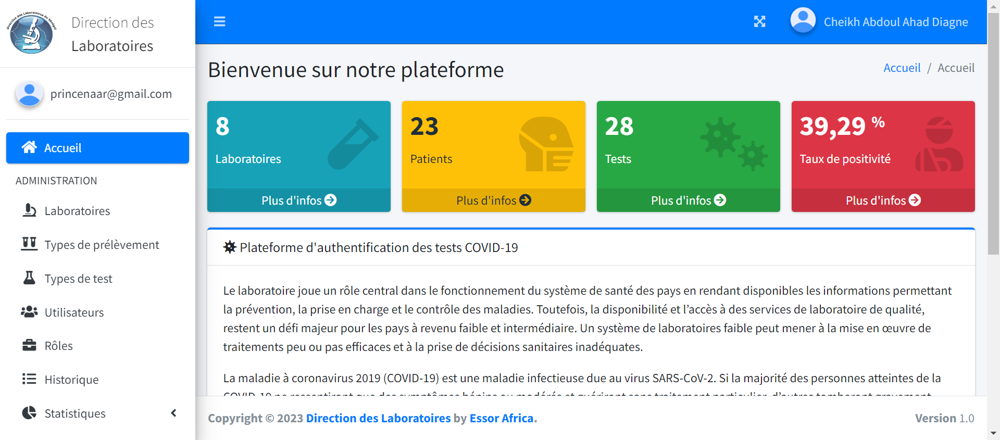

Mission
Analyser le besoin, concevoir puis déployer une solution nationale permettant aux autorités et aux usagers de vérifier des résultats de tests COVID.
Contribution
Pilotage des sprints, architecture, modèle de données, développement backend, gestion des accès, tests et déploiement automatisé. Production du cahier des charges conceptuel, du plan de tests et du guide utilisateur, puis formation des utilisateurs.
Résultat
Le logiciel national d’authentification a été conçu, développé et déployé dans le délai de la mission.
